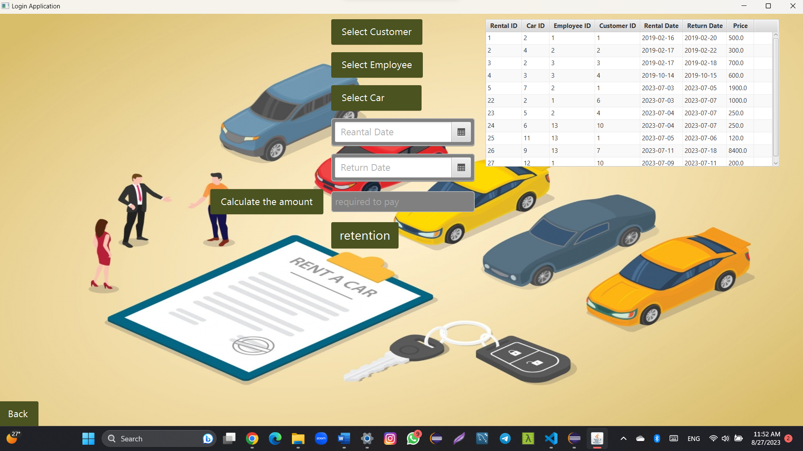
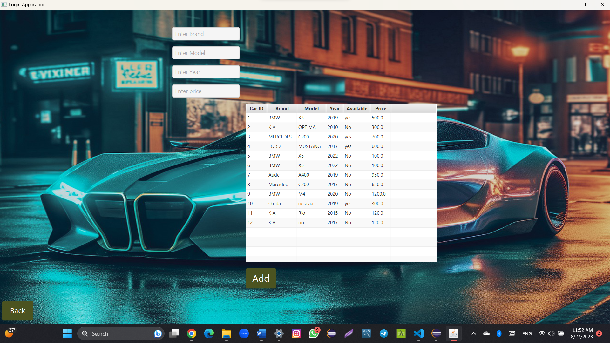
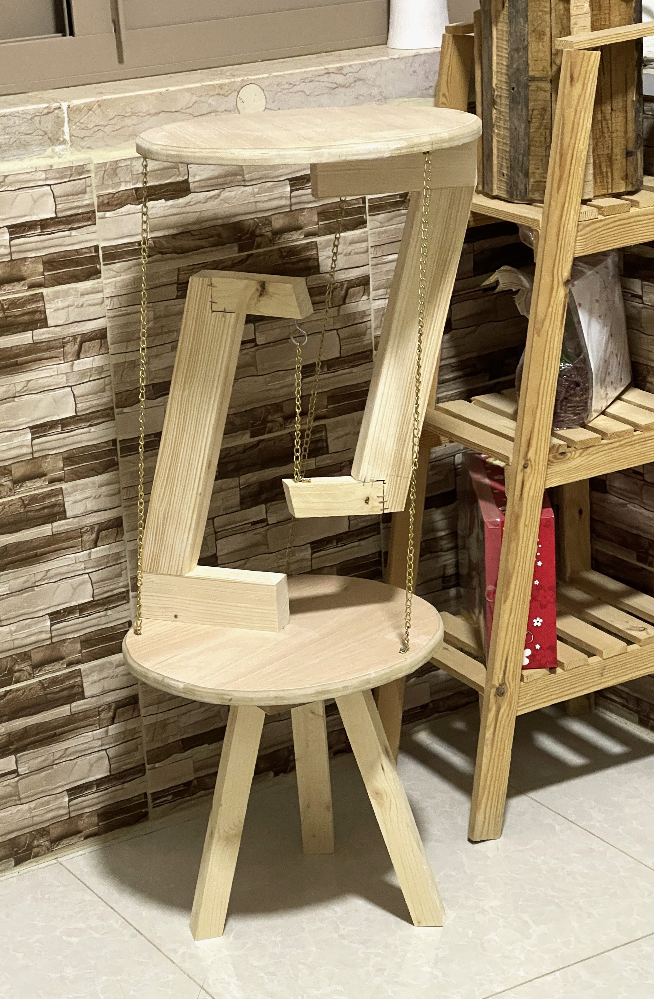

مرحبًا بك في مساق شبكات الحاسوب، هذا خادم ويب مصغر
لمعرفة المزيد حول لغة بايثون، انقر هنا
اسم الطالب: محمد زبن
الرقم الجامعي: 1202068
أنا أدرس علوم الحاسوب في جامعة بيرزيت.
قمت بإنجاز العديد من المشاريع باستخدام لغات الجافا والجافا اف اكس،
وقمت بإنشاء قاعدة بيانات باستخدام لغة ال اس كيو ال
وفي السنة الدراسية الاولى قمنا بعمل مشاريع بسيطة بلغة السي
 
هذه بعض الصور من مشروع مادة قواعد البيانات
لدي هواية كتابة الشعر والأفكار والمقالات القصيرة. خلال سنوات مدرستي،
شاركت في العديد من المسابقات، وكنت سفيرًا لمدرستي في المدرسة الإعدادية. أعمل أيضًا كنجار،
لأن والدي يمتلك ورشة نجارة وكنت أعمل معه منذ الطفولة.

وهذه صورة لتحفة فنية قمت بصنعها،
حيث تعتمد هذه التحفة على مركز الثقل (الطاولة الطائرة)